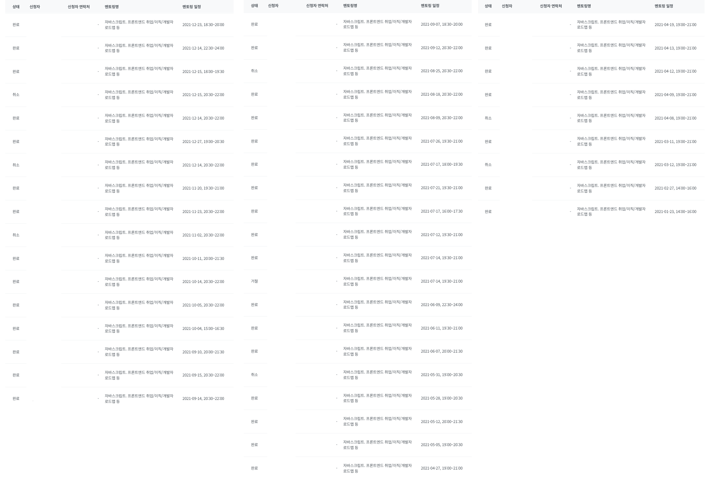
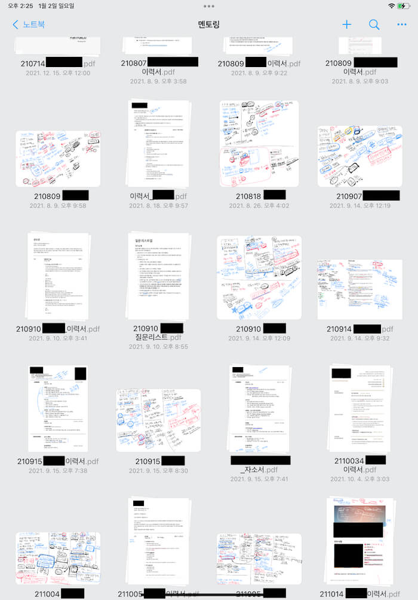
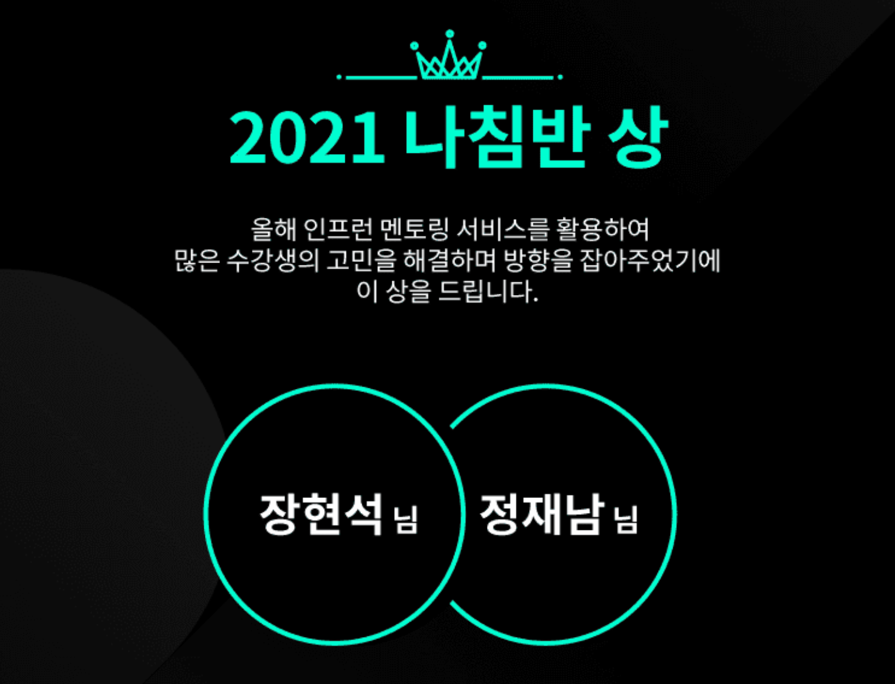
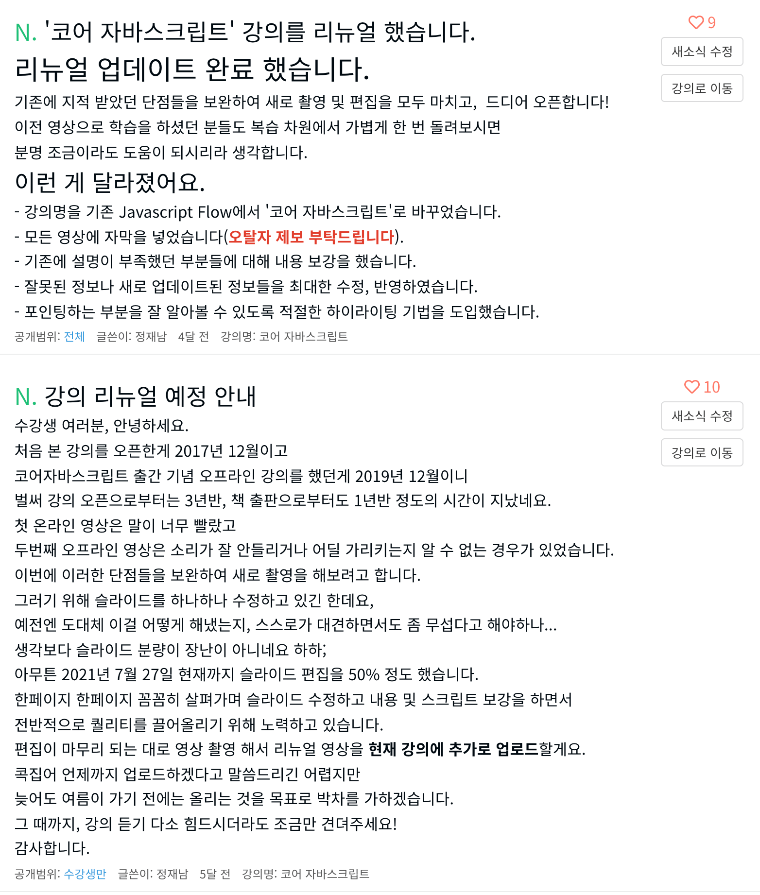

살면서 처음으로 회고라는걸 써보고자 한다. 많은 분들이 작성한 회고를 보면서 부럽기도 했고, 장기적 계획 없이 단기적으로 ‘이번엔 뭐 해볼까’만 생각하며 흘러가는 대로 살아온 내 인생도 1년을 쭈욱 돌이켜보면 뭐라도 이룬게 있겠지 싶다. 찬찬히 생각나는대로 정리해보자.
1. 이사 (3월)
코로나 덕분에 결혼식은 하지 않은 채로 2020년 3월에 처음 양재에서 신혼집을 자리잡았는데(혼인신고는 2020년 11월에 마쳤다), 12평 남짓한 작은 집이 아기자기하게 만족하면서도 못내 답답했었다.
여가생활 및 잠을 자기 위한 공간으로만 계획했던 건데, 코로나가 장기화되면서 재택근무를 1년 가까이 하다보니 몸이 축났다. 책상이 없어서 바닥에 앉아 좌식테이블 깔고 일하다보니 허리도 아프고 눈도 침침해졌다.
그래도 어떻게든 2년 채우고 이사하려고 생각했었지만, 우연히 동네에 신축 건물이 눈에 들어와서 큰 맘 먹고 이사를 단행했다. 신혼 혼수 가전을 부랴부랴 장만하고, 전세자금대출, 전세보증보험 등도 열심히 알아보느라 정신없고 힘들지만 참 신나는 나날이었다. 탕진잼이란 이런거구나!
이사 오고는 여러모로 쭈욱 행복하다. 나름대로 작업 환경이 갖춰진 덕분에 이후의 많은 대외활동도 가능해졌으니, 참 잘 한 선택이었다.
2. 멘토링
올 한 해는 멘토링의 해라고 해도 될 것 같다. 멘토링을 참 많이도 했는데, 주제 넘는 참견이나 잘못된 지식을 전파한 사례도 있었지 않을까 싶다. 멘토링 사례를 쭈욱 모아보면 이렇다.
인턴 멘토링 (1월)
2020년말에 멘토링했던 부스트캠프 멘티 둘이 포함된 총 네 명의 인턴이 팀에 합류했다. 이들을 두 팀으로 나누어 한 팀을 맡아 프론트엔드 관련해서만 조언을 해주었다. 최종 세 명이 팀에 합류했으니 엄청 성공적이었지만, 내가 기여한 건 0에 가깝다는 생각이 든다. 굳이 기여한 부분을 찾자면 부스트캠프 멘토링 때 유심히 지켜봤던 둘을 추천했다는 점 정도?
인턴과정을 거쳐 입사한 신입들은 각자도생 알아서 잘 크는 중이다.
나름 멘토로서 뭐라도 케어해줘야겠다는 생각이 없진 않은데,
- 알아서 너무 잘들 하고 있고,
- 코로나 시국이라 계속 재택만 하다 보니 생각보다 쉽지 않았다는 점,
- 내 앞가림도 잘 못하는 주제에..?
싶은 생각 등을 핑계 삼아 그저 관망만 하고 있다.
뭐 이제 1년이 꽉 찼으니 다들 그럭저럭 잘 적응한 듯 싶으니, 마음의 짐은 은근슬쩍 내려놓기로..
인프런 멘토링 (1년내내)
‘내 주제에’ 라는 생각을 늘 갖고 있으면서도, 누구보다 적극적으로 멘토링을 해댔다. 다양한 환경과 입장에 놓인 프론트엔드 꿈나무들을 만나면서, 나름대로 최선을 다해 조언을 해주었다고 생각한다. 기록을 잘 하지 못하는 나이지만, 멘토링 할 때의 기록은 남아 있어 어떤 분들과 어떤 내용으로 얘기했는지는 복기할 수 있어 다행이다.
내가 기여한 바가 없었더라도 어쨌든 ‘덕분에 취업했다’는 소식이 들리면 정말 행복하고 뿌듯하다. 이 맛에 끊지 못해! 몇몇 분들은 이후로도 몇 번씩 찾아와서 내가 고기도 사주고 가끔 얻어먹기도 하며 인맥이 늘어나고 있다. 친구도 없어서 사람 볼 일 없이 집에만 콕 박혀 살던 내게는 가뭄의 단비 같은 일이었고, 그 때마다 ‘내가 그래도 잘 살고 있구나’ 하는 안도를 느꼈다.
 연말에 인프런에서 '나침반상'을 줬다. 아직 선물이 집에 도착하진 않았지만 어쨌든 뿌듯하다! '성장 기회의 평등'이라는 큰 목표에 어떤 식으로 좀 더 가까워질 수 있을지, 계속해서 고민하고 다양하게 시도해봐야지.캐치 웨비나 (7월 23일)
https://www.catch.co.kr/CatchCafe/ProgramView/1230
멘토링 하면서 공통적으로 고민하는 내용들이 종종 눈에 밟혀 이런 내용들을 한 데 모아 웨비나 형식의 발표도 몇 번 하게 되었다. 캐치 웨비나가 그 중 첫번째였는데, 줌으로 하다보니 어색했지만 어떻게든 잘 마무리했다.
우테코x원티드 오늘의 개발자 (10월 6일)
https://www.wanted.co.kr/events/livetalk42
나름대로 취준생들에게 힐링의 시간을 드리고자 했으나, 팩폭으로 뼈가 아프다는 반응도 있었다. 임동준님께서 진행을 너무 잘 해주셔서 참 편하게 녹화했던 것 같다.
3. 강의, 스터디, 발표
graphQL 라이브러리 비교 발표 (4월 16일)
사내에서 apollo-client, swr, react-query를 비교 분석하는 발표를 했다. 발표 자체는 시청률 1위를 찍을 정도로 큰 관심을 받았는데, 상대적으로 팀 내부에서는 그닥 관심을 받지 못해 아쉬웠다. 내가 현재 팀의 성장 및 발전을 위해 기여할 수 있는 부분이 무엇이 있을지 잘 모르겠다.
인프런 react 클론코딩 강의 오픈 (7월 8일)
https://www.inflearn.com/course/풀스택-리액트-토이프로젝트?inst=4227b52f
사내발표때 준비했던 자료를 바탕으로 새로운 강의를 오픈했다. 프론트엔드 개발자로서 초반에 느꼈던 가장 큰 갈등, 즉 프론트엔드 포트폴리오를 만들기 위해 부득이 백엔드를 ‘깊이 있게’ 공부해야 한다고 생각해 부담을 느끼는 분들에게 백엔드 개발자 없이도 동작하는 서비스를 만들 수 있는 손쉬운 방법을 전하고 싶었다. 이런 마음이 수강생들에게 충분히 전달되었기를 바랄 뿐이다.
인프런 코어자바스크립트 강의 리뉴얼 (8월 26일)
https://www.inflearn.com/course/핵심개념-javascript-flow?inst=6fb80580
코어자바스크립트는 2017년에 처음 JSFlow 라는 이름으로 오픈했던 강의로, 사실상 지금의 나를 있게 한 시초라고 해도 과언이 아닐 것 같다. 이를 바탕으로 코어자바스크립트 라는 책도 쓰게 되었고, 책 출간 기념으로 오프라인 강의를 하고 영상을 추가했던게 벌써 3년 전 일이니 말이다.
당시의 내가 알던 지식에 잘못된 내용도 있었고, 전달력에 대한 보강도 필요했으며, 무엇보다 오프라인 녹화영상의 한계(기침소리, 가독성, 볼륨조절 등)가 컸다. 리뉴얼에 대한 심리적 압박을 계속 느끼고 있다가, 올 해 드디어 일을 저질렀다.
기존 슬라이드로부터 내용을 잔뜩 보강하고, 촬영과 편집을 거듭하는 등 정말 노력에 노력을 기울였다. 심지어 자막까지 추가했다. 역시 시작하기 전엔 엄두도 나지 않던 일도, 저질러놓고 보면 어떻게든 끝을 볼 수 있다는걸 새삼 깨달았다.
리팩터링 2판 독서 스터디 (6월 29일 ~ 7월 22일)
https://youtube.com/playlist?list=PLjQV3hketAJmyZmqXZ1OVEFNctalbf9SX
인프런을 통해 인원제한 없이 모집했다. 온라인 1:n 스터디는 처음 시도해 보는 방식이었다.
처음에는 유튜브 스트리밍에 전적으로 기대었다. 채팅 딜레이가 생각보다 컸지만, 주로 나 혼자 일방적으로 떠드는 형식이라 크게 문제되지 않았다.
다만 2회차 컨텐츠(챕터2)는 책의 내용 자체보다는 각자의 경험담을 대화를 통해 나누는 것이 훨씬 의미있을 것 같아, 디스코드를 활용했으나… 장렬히 실패했다. 1:n으로 모집한 상태에서 스터디원들끼리 서로 인사를 나눈 적도 없는 상태이다보니, 멤버 모두에게 ‘참여자’보다는 ‘관전자’라는 인식이 크게 자리매김했기 때문이 아닐까 한다. 애초에 그런 한계가 있을거란건 어느정도 예상하고 시작했던 것인데, 생각보다도 벽이 훨씬 높았던 것 같다.
어쨌든 꾸역꾸역 끝까지 어떻게든 달렸다. 리팩터링 자체에 대한 지식보다는 ‘어떻게든 해냈다’는 성취감이 더 컸는데, 그래도 유튜브 영상이 남았으니 두고두고 가끔씩 필요한 부분 살짝살짝 꺼내어 먹을 수 있게 되었다는 점은 좋은 것 같다.
이펙티브 타입스크립트 독서 스터디 (7월 27일 ~ 8월 17일)
https://youtube.com/playlist?list=PLjQV3hketAJmXGaWCMGB9-085EiefWcyw
리팩터링 독서스터디에서 탄력받아 바로 이어서 또 저질렀다.
이번에는 웨일 브라우저의 ‘웨일온’ 기능을 이용하여 스터디원들과 소통하고자 했는데, 채팅 딜레이는 없었지만, 채팅 내용이 두개씩 뜨거나 자꾸만 튕기는 멤버들이 많았다. 꾸역꾸역 이어가다가, 결국에는 줌으로 갈아타게 되었다.
내가 타입스크립트 초보이기도 했고, 컨텐츠 자체 난이도가 있는데다, 책이 설명을 생략하거나 저자 본인만 알 법한 내용들이 종종 있어서 유추를 해야하다보니, 그럭저럭 스터디원들의 참여율이 꽤 높았다. 함께 토론하고 추측하면서 허위허위 헤쳐나가다 보니 타입스크립트에 대한 이해도 제법 높아진 것 같다. 그 덕분에 1:n이라는 형식에도 불구하고 다함께 성장하는 좋은 시간이었던 것 같다.
모던 자바스크립트 딥다이브 독서 스터디 (8월 30일 ~ 10월 7일)
https://youtube.com/playlist?list=PLjQV3hketAJnP_ceUiPCc8GnNQ0REpCqr
역시 인프런을 통해 모집했다. 이번에는 처음부터 줌으로 진행했고, 인원을 100명으로 제한하여 추가 모집 없이 그대로 쭉 갔다. 그간의 경험을 통해 3회 불참시 강퇴라는 나름의 초강수를 두었는데, 이게 도움이 된 건지 독이 된 것인지는 잘 모르겠다.
유튜브로 편집해서 계속 업로드를 하였기 때문에 스터디원들에게도 ‘빠져도 못들어도 그만’이라는 생각이 은연중에 자리잡지 않았을까 싶기도 하고, 본방사수를 통해서만 누릴 수 있는 무언가가 더 있었다면 어땠을까 싶기도 한데, 그 ‘무언가’가 무엇인지는 모르겠다.
이번 스터디는 애초에 내가 이미 잘 알고 있는 지식을 빠르게 전달하면서 가끔 내가 모르던 지식이 등장하면 다행이다- 생각하고 진행했던 터라 앞선 스터디들보다도 더 일방적으로 진행될 수밖에 없었다. 그렇지만 완전히 일방적이지 않을 수 있었던 이유는 스터디원들이 종종 유의미한 질문을 해주셨기 때문인 듯 하다.
생각치 못한 계기로 이웅모 저자님도 참관을 들어오셨는데(thanks to Rita), 내가 헛소리를 하거나 틀린 정보를 전달하는 경우도 있었을텐데도 묵묵히 참고 견뎌주신게 감사하면서 한편 묘하게 서운하기도 하고 그랬다. 중간에 한 번 2022에 새로 추가될 기능 관련한 링크를 툭 던져주셨던게 기억에 남는다. 나중에 기회가 된다면 술 한 잔 꼭 나누고 싶은 분이다.
기존 스터디는 나도 잘 모르는 내용이다보니 ‘에라 모르겠다’ 하는 심정에 편집도 거의 하지 않고 유튜브에 빠르게 올렸는데, 이 스터디는 내가 나름대로 자신 있는 내용으로만 거의 이뤄져있어서 그런지, 강의 영상과 비슷한 욕심이 나서 편집하기가 정말 힘들었다. 나는 원래도 말을 한 번에 주욱 유려하게 잘 하지 못하고, 몇 단어를 뱉다가 생각하고 다시 몇 단어 뱉는 식으로 문장 사이사이의 호흡이 길다. 남들은 아무렇지 않게 받아들일 수도 있을 것 같지만, 왠지 나 스스로는 그걸 견디기가 참 힘들다. 하여 녹화된 영상을 틀 떄면 어김없이 공백을 잘라내곤 하는 것이다.
vrew라는 편집툴에서 ‘공백제거’ 기능을 제공하고는 있는데, 이걸 통해서도 내 특유의 ‘단어 사이의 공백’까지 제거해주지는 못한다. 결국 내가 견딜 수 있는 영상을 위해서는 매번 직접 들으면서 잘라붙이기를 해야 하는 건데, 어색하지 않게 이어붙이려면 같은 문장을 몇 번씩 들어야 한다. 내 목소리를 몇 번이고 돌려 들으면서 편집을 하다보면 이상하게 잠이 쏟아진다. 잠과 싸워가며 허위허위 편집을 하는 데엔 보통 1시간짜리 영상 하나당 4~5시간 정도가 쓰이는 것 같다.
나에게 온라인 강의에서 가장 큰 부담은 바로 이 편집과정에 있다. 편집 전문 어시스트가 간절한데, 어지간하면 내 까다로운 요구사항을 만족시켜줄 사람은 없을 것 같아 아예 찾아볼 엄두도 못내서 문제다.. 아무튼 2021년 12월 31일에야 비로소 힘들고 지난한 편집과정을 마쳤다. 후련함과 동시에 극심한 피로가 몰려와서 이틀간 내리 잠만 자다가 이제서야 뒤늦은 회고를 적게 되었네.
우테코 next step - clean code js 1기 참여 (11월 10일 ~ 12월 31일)
우아한 테크코스 리뷰어로 활동하기 위한 사전 답사 목적으로 스터디에 참여했다. 그간 생각만 하고 직접 테스트해본 적은 없었던 다양한 기법들, 예컨대 MVC 및 MVP 패턴이라거나 Custom Element, Flux 아키텍쳐 등 다양한 테크닉을 시도해보며 즐거운 시간을 보냈다.
멤버들끼리 서로의 코드를 보고 리뷰해주는 것만으로도 단기간에 동반 폭풍 성장하는 놀라운 현장을 직접 체험했다는 점이 커다란 의미로 다가왔다. 현재 하고 있는 고민(성장 기회의 평등)을 보다 구체적으로 고민할 수 있게 해준 계기가 되었던 것 같다.
인프런 ‘To. 주니어 개발자’ 투고 (12월 3일)
https://www.inflearn.com/pages/for-junior-developers-20211207
난 아직 스스로 ‘시니어’라고는 생각하지 않는다. 기껏해야 주니어 레벨을 간신히 떼고 이제서야 1인분의 팀원 구실을 하고 있는 정도일까.
그럼에도 ‘숨만 쉬는 동안 저절로’ 연차는 쌓여버려서인지, 어느새 링크드인 등을 통해 입사제안이 들어오는 걸 보면 대부분 ‘시니어 프론트엔드 개발자’로서의 나를 기대하는 것 같다.
인프런 투고글 역시 마찬가지였다. 단순히 그냥 나라는 사람에게 ‘주니어에게 해주고 싶은 말’을 요청한 것이라고 생각했고 그에 응했을 뿐인데, 지나고 보니 그 요청 자체도 이미 나를 시니어로 보고 있기 때문에 들어왔던 것이었던 것이었다. 어쩌다보니 본의 아니게 뒷짐지고 엣헴 거리며 ‘라뗀말이야’ 일장연설을 늘어놓은 셈이 된 것 같아 퍽 부담스러웠다.
글의 전체 취지는 ‘자괴감에 잡아먹히지 말자’는 것이었는데, 여러 커뮤니티 사이트에서의 공격적인 댓글들이 가슴을 후벼팠다. 그렇지만 분명 이 글이 작게라도 위로와 힘이 된 분들도 분명 많이 있으리라 생각한다.
유튜브 1000명 돌파 감사 라이브 방송 (12월 27일)
모던 자바스크립트 딥다이브 독서 스터디 영상 덕분인지 순식간에 구독자가 1000명을 돌파했다. 이번 역시 일단 질러놓고 나서 어떻게든 수습했고, 그 결과 영상이 짠 하고 결과로 남아 만족스럽다.
사실 이전부터 짤막하게 내 생각을 영상으로 만들어 올리는 작업을 하고 싶었는데, 모자딥 영상 편집을 모두 마치고 나서 하자며 뒤로 미뤄왔었다.
이번 영상을 계기로 앞으로는 종종 프론트엔드 개발과 관련한 다양한 생각이나 정보들을 공유하는 영상을 계속 이어가보고자 한다.
4. 2022년의 목표
- ‘시니어 개발자’로서의 자질을 갖춰가는 데에 보다 포커스를 맞춰 고민하고 성장하는 한 해가 되길 바란다.
- ‘성장 기회의 평등’과 관련하여 고민하고 있는 부분(코드리뷰 등)을 어떻게 하면 풀어낼 수 있을지, 방법을 찾아내고 이리저리 시도해보자.
- 저지르고 수습하는 방식은 잘 맞으니 계속 이렇게 살아보자. 지르고 나면 어떻게든 되겠지. 아님 말고.